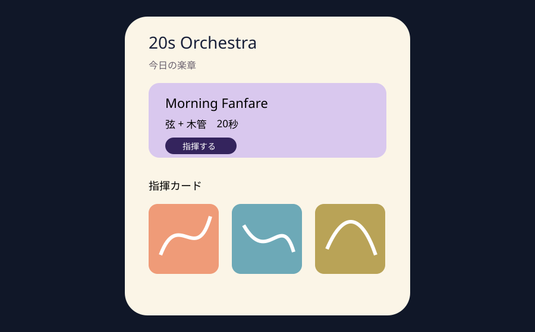
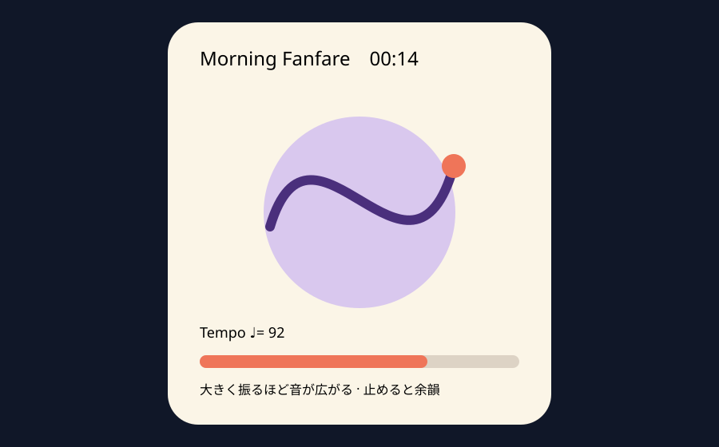

Question Note
iPhoneを指揮棒にする「20秒オーケストラ」アプリ事業案


中心となる楽しさ
困りごとの解決ではなく、iPhoneを指揮棒のように動かすと、振る速さでテンポ、幅で強弱、停止で余韻が変わる身体的な音遊びです。Core Motionは姿勢・回転・加速度を取得でき、AVAudioEngineは音声ノードをリアルタイム処理でき、Core Hapticsは強度と鋭さを時間変化させられます。
利用トリガーは休憩や帰宅後の20秒。楽章を選ぶ → 端末を指揮する → 自分の演奏を聴く → 指揮カードを棚へ置くが中心ループです。iPhoneが演奏面、ウィジェットは今日の楽章と前回カードだけを表示します。
既存体験との差
| 比較 | 本案の価値 | 保持・支払い理由 |
|---|---|---|
| 音楽ゲーム | 譜面正解やスコアではなく身振りの表情 | 失敗がなく20秒で一曲になる |
| 楽曲プレイヤー | 同じ素材でも本人の停止と加速で変化 | 楽器編成と録音カードを所有できる |
| 作曲アプリ | 専門知識・編集画面なし | 広告なし、追加楽器、丁寧な音と触覚 |
紙、電話、チャット、表計算では身体運動に同期する音響体験を提供できません。生のモーション時系列は送信しません。
サービス機能と変化
- 20秒の弦・木管・打楽器素材と日替わり楽章
- 回転速度、加速度、静止からテンポ・強弱・余韻を生成
- 拍の節目だけを伝える弱い触覚、音量上限、片手・着席モード
- 結果を波形ではなく色と軌跡の「指揮カード」で保存
- 楽器パック、購入復元、任意同期、オフライン演奏
100万円規模の収益
音楽好きと短時間の創作玩具を好む層へ、850人 × 年額960円 + 680楽器パック × 300円 = 売上1,020,000円。無料版3楽章から年額版36楽章へ移行し、追加編成は買い切りにします。
システム要件
- SwiftUI、Core Motion、AVAudioEngine、Core Haptics、StoreKit
- 前景時だけセンサーを使用し、開始前に周囲と握り方を確認
- 着席・小振り・タッチ代替、Reduce Motion、触覚OFF
- 端末内音響処理、匿名クラッシュ情報、同期はカードと購入権利だけ
AWSシステム要件と支出
東京リージョン、無料枠・クレジット除外、1 USD = 155円。公開前にAWS Pricing Calculatorで再計算します。
| AWS | 用途 | 想定 | 月額 | 年額 |
|---|---|---|---|---|
| S3 + CloudFront | 楽章・楽器素材配信 | 30GB、月15万配信 | 1,700円 | 20,400円 |
| Cognito | 任意同期アカウント | 1,500 MAU | 1,500円 | 18,000円 |
| API Gateway | カード・購入復元API | 月22万req | 800円 | 9,600円 |
| Lambda | 同期・配信判定・匿名集計 | 月22万実行 | 900円 | 10,800円 |
| DynamoDB | 匿名ユーザーID、所有楽章・楽器、指揮カードの要約値、棚順、同期版、購入権利、アクセシビリティ設定 | 5万件、on-demand | 1,500円 | 18,000円 |
| SES | サポート・購入復元案内 | 月1,000通 | 300円 | 3,600円 |
| CloudWatch | API・配信エラー監視 | 月3GB | 800円 | 9,600円 |
| AWS Backup | 権利・カード要約保全 | 月12GB | 500円 | 6,000円 |
| AWS Budgets | 予算超過通知 | 2予算 | 200円 | 2,400円 |
| Route 53 | サポートサイトDNS | 1 zone | 100円 | 1,200円 |
| 合計 | AWS利用料 | 8,300円 | 99,600円 | |
開発、人員、利益
AIでSwiftUI、モーション分類、音声グラフ、端末差テストの初稿を作り、体験設計2週、試作3週、本実装6週、実機調整3週の14週。1人が企画・実装・運営を担い、演奏素材20万円、音響調整8万円、アクセシビリティ・安全QA8万円を外注します。
支出はAWS 99,600円、Apple Developer Program等2万円、外注360,000円、マーケティング160,000円、予備費80,000円の計719,600円。売上 - 支出 = 利益より1,020,000円 - 719,600円 = 300,400円です。
最初の実証とリスク
3楽章を20人に7日間試してもらい、再訪率、完奏率、小振りモード率、音量、端末を落としそうになった回数を測ります。周囲への接触、端末落下、乗り物酔い、音源権利がリスクです。着席推奨、ストラップ案内、狭い可動域、独自収録・契約台帳を必須にします。